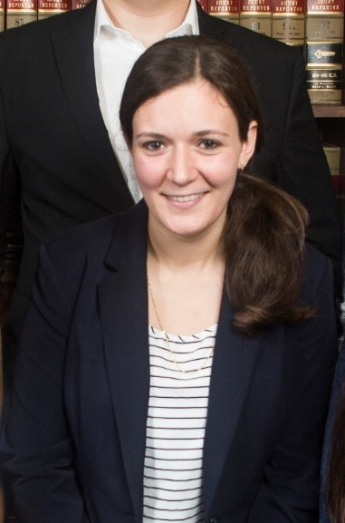
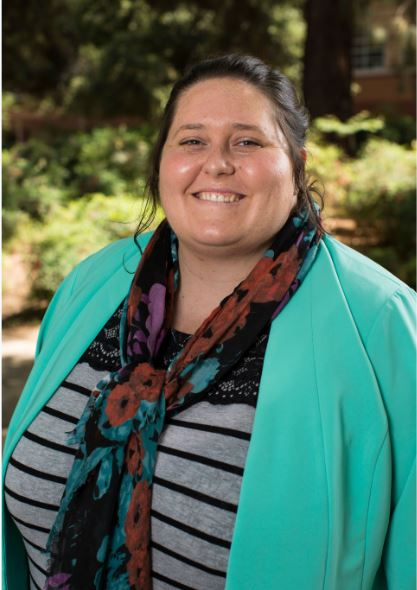
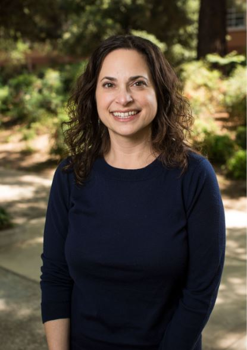
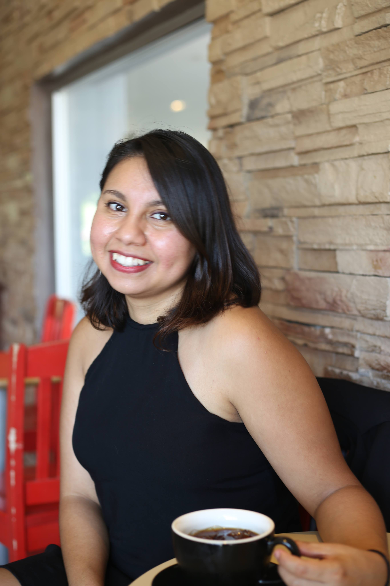
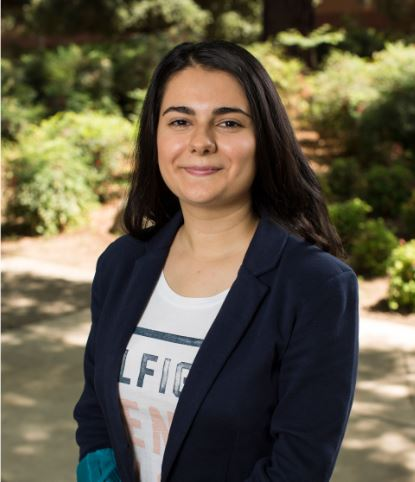

John Burnett
John is a PhD student at the University of California, Riverside. His recent research focuses on how technology and pathology can influence political predispositions.
Stephanie L. DeMora

Stephanie is a PhD student in the Political Science department, working under Dr. Loren Collingwood. Her sub-fields at UCR are Mass Political Behavior and American Politics. Additionally, she holds a B.A. in International Relations and Middle Eastern Studies, as well as an M.A. in Political Science from the University of Arkansas. Her previous research includes the socialization of refugee women in the United States, discrimination against religious communities, the effects of identity-based rhetoric.
Stephen Omar El-Khatib
Stephen is a doctoral student researcher at the University of California, Riverside, studying political science. His research primarily focuses on the politics of race, immigration, and ethnicity through the lenses of behavioral and comparative politics. More specifically, his existing and continued work evaluates discrimination and public policy. His research is primarily inspired and driven by his experiences as a bi-racial, first-generation Arab-American.
Sierra Graves

Sierra is a PhD student in the Political Science department at the University of California, Riverside. Her fields of interest are Mass Political Behavior and International Relations. Prior to her attendance at UCR, she was at San Diego State University where she earned her MPA focusing on Policy and Finance. She received her BA in Political Science from the University of California, San Diego. Her research interest is environmental justice.
Michelangelo Landgrave
Michelangelo Landgrave is a political science doctoral student at the University of California, Riverside. His research focuses on local politics and policy. His research has appeared in the Washington Post, The Hill, Vox, and other news outlets. He holds a master’s degree in Economics from California State University, Long Beach. He is a doctoral fellow with the Mexican National Council of Science and Technology (Conacyt).
Morgan Liedke

Christian Lindke
Christian Lindke is a Doctoral student in Political Science at the University of California, Riverside and the Program Director of the Arsalyn Program of Ludwick Family Foundation. Christian earned his Master of Science in Business Administration with a focus on Marketing and Market Research at California State Polytechnic, Pomona at their Graduate School of Business. Christian’s current research interests are political polarization, transmission of affective polarization between generations, and how parenting interacts with politics.
Sean Long
Sean Long is a PhD student in Political Science. His primary interests revolve around social identity, political communications, and the media, as well as quantitative methods and text analysis. His non-lab related research has focused on political extremism, local discrimination, and immigration. He also holds an MA in American Government from Georgetown University and a BA in philosophy from Reed College.
Arielle Manganiello

Jenn Merolla

Jenn is Professor of Political Science at the University of California, Riverside. Her research focuses on how the political environment shapes individual attitudes and behavior across many domains such as candidate evaluations during elections, immigration policy attitudes, foreign policy attitudes, and support for democratic values and institutions. She is co-author of Democracy at Risk: How Terrorist Threats Affect the Public, published with the University of Chicago Press (2009), and Framing Immigrants: News Coverage, Public Opinion and Policy, published with the Russell Sage Foundation (2016). Her work has also appeared in journals such as Comparative Political Studies, Electoral Studies, the Journal of Politics, Perspectives on Politics, Political Behavior, Political Research Quarterly, Political Psychology,and Women, Politics, and Policy. She was field editor for American Political Behavior for the Journal of Politics from 2015-2018. Jenn earned her PhD in Political Science from Duke University in 2003.
Adriana Ninci

Maricruz Ariana Osorio

Maricruz Ariana Osorio is a graduate student at the University of California, Riverside. She is proud to be in the company of McNair Fellows, Eugene Cota-Robles Fellows, and APSA MFP Fellows. She has published on the topics of race and Latinx politics. Her current research projects focus on immigration, refugees, political psychology, and gender. Maricruz is also part of the duo that make up People of Color Also Know Stuff.
Beyza Han Tuncez

Beyza Han Tuncez is a PhD student in Political Science Department at UCR. Her research centers on Comparative Political Behavior, specifically, ethnic conflict, political behavior and representation of ethnic minorities. She holds a B.S in Political Science and Public Administration from the Middle East Technical University, Turkey and an M.A in Political Science from the University of California, Riverside.
Ding Wang

This website was created and is maintained by Stephanie L. DeMora